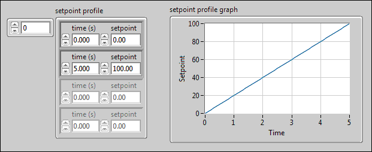
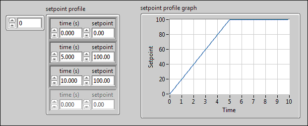
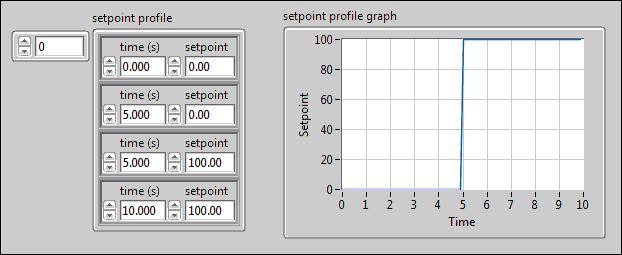

You can use the PID Setpoint Profile VI inside a control loop to generate a profile of setpoint values over time for a ramp and soak type PID application. For example, you might want to ramp the setpoint temperature of an oven control system over time, and then hold, or soak, the setpoint at a certain temperature for another period of time. You can use the PID Setpoint Profile VI to implement any arbitrary combination of ramp, hold, and step functions.
Specify the setpoint profile as an array of pairs of time and setpoint values with the time values in ascending order.
You can specify a ramp setpoint profile with two setpoint profile array values, as shown in the following image.

A ramp and hold setpoint profile also can have two successive array values with the same setpoint value, as shown in the following image.

A step setpoint profile can have two successive array values with the same time value but different setpoint values, as shown in the following image.

The PID Setpoint Profile VI returns a single setpoint value determined from the current elapsed time. The first call to the VI initializes the current time in the setpoint profile to 0. On subsequent calls, the VI determines the current time from the previous time and the dt input value. If you reinitialize the current time to 0 by passing a value of TRUE to the reinitialize? input, you can repeat the specified setpoint profile.